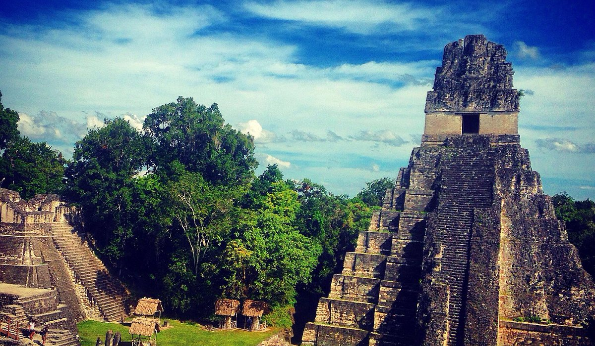
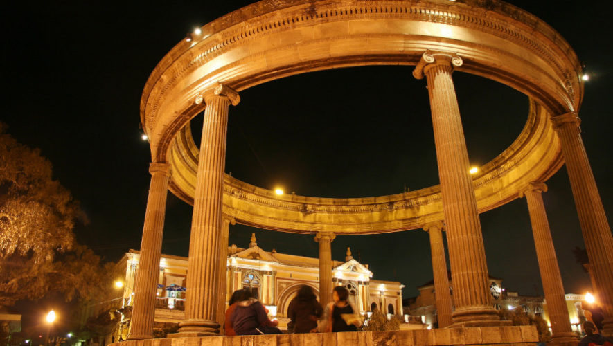
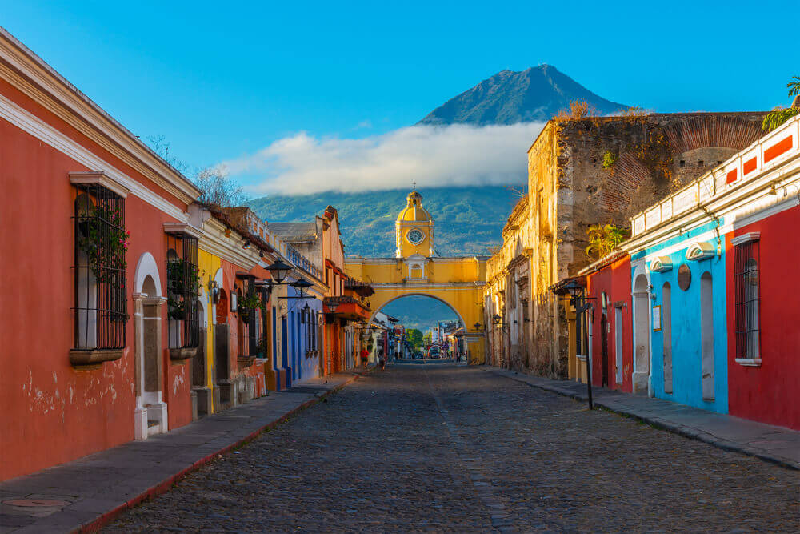

Petén es el corazón del mundo maya en Guatemala, ofreciendo una mezcla inigualable de sitios arqueológicos mayas como Tikal y Yaxhá, junto con paraísos naturales como el Cráter Azul y la pintoresca Isla de Flores. Destaca por sus lagos, selvas tropicales y una rica biodiversidad, siendo el Parque Nacional Tikal el destino más famoso
Parque Nacional Tikal: Cuna de la civilización maya, famosa por el Templo IV y el Templo II.
Yaxhá: Conocido por sus impresionantes atardeceres y pirámides, ubicado a 62 km de Flores.

Quetzaltenango (Xela) ofrece una mezcla de cultura, historia y naturaleza, destacando la Laguna y Volcán Chicabal, las relajantes Fuentes Georginas en Zunil, y el histórico Centro Histórico con el Teatro Municipal. También son imperdibles el mirador del Cerro El Baúl, el Pasaje Enríquez y el Museo del Ferrocarril de los Altos.
Laguna y Volcán Chicabal: Un lugar sagrado maya con una laguna en su cráter, ideal para senderismo.
Fuentes Georginas: Aguas termales naturales rodeadas de bosque nuboso en Zunil.
Cerro El Baúl: Ofrece vistas panorámicas de la ciudad y senderos.

Antigua Guatemala es una ciudad declarada Patrimonio de la Humanidad que destaca por su arquitectura colonial, calles empedradas y vistas impresionantes a los volcanes.
Arco de Santa Catalina: Símbolo principal de la ciudad. Es ideal para fotografías por la mañana con el volcán de Agua al fondo.
Parque Central: El corazón de la ciudad. Rodeado por la Catedral, el Palacio de los Capitanes y el Ayuntamiento.
Cerro de la Cruz: Mirador que ofrece una vista panorámica de Antigua y los volcanes. Se puede subir a pie o en vehículo.
Tanque La Unión: Lavadero histórico de 1853 y punto de reunión local
